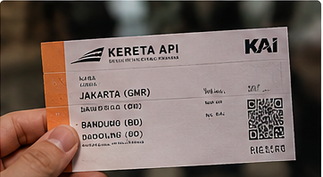

Tiga Catatan Pilihan
1. Jam Tua di Ruang Tunggu
Sebuah jam dinding tua menjadi titik perhatian karena tetap terlihat mencolok di antara papan informasi digital.

2. Lorong Setelah Kereta Terakhir
Lorong yang biasanya ramai berubah menjadi ruang yang tenang setelah arus penumpang berkurang.
3. Suara Pengumuman dari Peron
Pengumuman kedatangan kereta menjadi bagian khas dari pengalaman berada di stasiun.